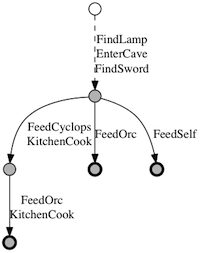

(Release 1.1.0. The PlotEx script is in the public domain.)
Designing a large puzzle adventure game (whether text-based or graphical) requires a lot of persnickety detail work. But one also has to keep track of the underlying (or perhaps over-floating) plot; and this also requires a lot of annoying details. Imagine you're three-quarters of the way through building a game, and you decide one particular puzzle should have an alternate solution. Now you can get past the Guardian of Pheebor using either the potion of invisibility or the Rod of Lordly Tights. What does this do to your plot? Can the player save the potion for the Muffin Griffons, thus bypassing a puzzle that isn't supposed to be solvable until chapter 6?
(I'm using "plot" here to talk about the player's advancement through the game mechanics. This sort of plot may be only faintly tied to the game's story, but that's a digression for a different time.)
We clever designers have many tricks to deal with this. Typically we name a few critical resources, make sure each one chains neatly to the next, and then hang the rest of the game off of them. Or we might get fancy and make several plot threads available in parallel -- as long as they jump back together at a clearly-specified point.
Simple structures often come across as simplistic, however. Players can see these tricks too. (Quoting Rob Wheeler: "While playing you can start to feel the diagrams on the whiteboards that led to your experience." That's out of context, but I couldn't let that admirable distillation be lost to history.)
So what is a designer to do? One can only hold so much in one's head at a time. "Be smarter than all your players" was unlikely advice even before the Internet turned players into an unstoppable puzzle-devouring hydra.
Game designers (the mathier ones, at least) have often talked about "plot graphs" as a way to visualize design. (See, e.g., C.E. Forman's article in XYZZYNews 4. Spoilers for Enchanter.) A graph (directed acyclic graph, says the pedant) should be exactly the right structure for expressing puzzle requirements and how they interact. Doesn't this solve the problem?
It does, in part. You can draw a graph for your game, and it will give you a good idea of where your game is broad and where it is narrow; which plot elements must be tapped right away, and which can be deferred until the end of the game. But the graph isn't so good for finding design problems, or looking at variations. The article linked above charts Enchanter. However, it doesn't try to represent the fact that the KULCAD spell can unravel many different obstacles -- but you can only cast it once. If you choose poorly, the game becomes unwinnable. (Arguably the trickiest challenge in the game, from the player's point of view.) To add these variations to the chart would clutter it with KULCAD nodes, and you would have to study the result carefully to understand that there's just one way to win.
What we want, then, is a way to graph a game and reassure ourselves that the structure works the way we want. (And no other.) PlotEx is a simple Python tool to accomplish that.
I'll start with a simple example:
# Our actions
FindSword = Set(sword=True)
FindLamp = Set(lamp=True)
EnterCave = Chain(Has(lamp=True), Set(underground=True))
FeedSelf = Lose('food')
FeedCyclops = Chain(Has(underground=True), Lose('food'), Set(kitchen=True))
FeedOrc = Chain(Lose('food'), Set(pants=True))
KitchenCook = Chain(Has(kitchen=True), Set(food=True))
# Our (sole) starting state
Start = State(food=True)
Hopefully, this is pretty clear even at first glance. (Bar some brow-wrinkling about what needs to be capitalized and why there are sometimes quote marks.)
Our notional game has seven actions. For example, FindSword represents the player finding a handy sword hanging above a mantel; its action is to set sword to True. Then there's FindLamp. Then we see EnterCave, which chains together two pieces: if the player has the lamp, then the player can reach underground. The FeedSelf action has the player greedily devouring food; it is also possible to feed an orc or (once underground) a cyclops. Finally, KitchenCook is a way to get food, if the player has reached the kitchen.
The last line is not an action, but the player's starting state. We will helpfully start off with some food, since the kitchen is not immediately available.
The question, then, is: can the player reach the kitchen while wearing pants? (A daily challenge for many self-employed programmers.) If you graph the story, you wind up with an unenlightening straight chain. You might add some dead-end side branches where you feed the orc too soon, or eat the food yourself, but it's awkward.
Running PlotEx displays the following:
% python plotex.py
<lamp pants sword underground>
(4): FindLamp, EnterCave, FindSword, FeedOrc
<lamp sword underground>
(4): FindLamp, EnterCave, FindSword, FeedSelf
*<food kitchen lamp pants sword underground>
(7): FindLamp, EnterCave, FindSword, FeedCyclops, KitchenCook,
FeedOrc, KitchenCook
3 terminal states (1 preferred) reached
In other words, this game has three final outcomes -- one where the player eats the food, one where the player feeds the orc first, and one with the full cyclops-kitchen-orc solution. For each case, we can see how many actions were needed, and what they were. The asterisk indicates that the third solution is better than the others.
Notice that actions aren't once-only. In the third outcome, the player does KitchenCook twice. The food gets used up on the orc, so the player immediately runs back to get more food! As players will.
Of course this is less enlightening than a plot diagram in some ways. It does, nonetheless, answer the question.
If you do want a graph, PlotEx will provide one, with the help of the GraphViz application. The states are somewhat collapsed, for simplicity, but the arrows show their actions. You can see that the important three final states are highlighted. (The dotted line, we'll get to shortly.)

We can do more, though. How far can you get if you never manage to find the kitchen?
% python plotex.py --block KitchenCook *<kitchen lamp sword underground> (4): FindLamp, EnterCave, FindSword, FeedCyclops *<lamp pants sword underground> (4): FindLamp, EnterCave, FindSword, FeedOrc <lamp sword underground> (4): FindLamp, EnterCave, FindSword, FeedSelf 3 terminal states (2 preferred) reached
We temporarily remove the KitchenCook action from the scenario, and the script tells us: three final outcomes, none reaching the kitchen.
% python plotex.py --block FindSword
<lamp pants underground>
(3): FindLamp, EnterCave, FeedOrc
<lamp underground>
(3): FindLamp, EnterCave, FeedSelf
*<food kitchen lamp pants underground>
(6): FindLamp, EnterCave, FeedCyclops, KitchenCook, FeedOrc,
KitchenCook
3 terminal states (1 preferred) reached
Without the sword, the player does fine. (Which was obvious upon inspection of the original code; nothing depends on having the sword. Look, it's an example.)
The script allows you to display all the intermediate states, if you like, or filter the output for states including a particular quality. You can also see which actions lead into and out of each state. But I won't force more examples on you.
At this point I should back up and explain the underlying assumptions of this model.
A state is a set of qualities. So far we've only seen boolean qualities. Qualities can also be numbers, strings, or sets. So we could set up a state like this:
Start = State(food=True, coins=2, ally='elf', spells=['summon', 'light'])
(A quality's type must match across the entire scenario. You can't set food to be True in one place but 3 in another.)
An action changes one state into another -- or else it fails, doing nothing. Since states are just sets of qualities, an action simply changes some qualities, perhaps after checking other qualities to see if it can succeed.
Here's the most important thing: by default, all qualities are assumed to be positive.
Any adventurer knows that having food is better than not having food. You might need food at some point, but (in general) you'll never need to not have food. And if you did, you could just throw the food away. Similarly, having three coins is better than having two coins (or no coins). Knowing "summon" and "light" is better than just knowing "summon". Being allied to the elves is better than no alliance.
This underlies my earlier claim that some game outcomes are "better than" others. Having <food kitchen lamp pants sword underground> is strictly better than having just <lamp pants sword underground>, because all those qualities are positive. PlotEx takes that for granted, which lets it optimize its computation; but it also just makes it easier to set up your scenario.
Here's the second important thing: any action that strictly improves a position is "free". In the example, picking up the sword and lamp are free actions -- they don't cost anything. The same goes for entering the cave and cooking food; these have prerequisites, but not costs.
PlotEx collapses free actions together, both in its text and graph output. There's never a reason not to do them, right? So we might as well do them as a group. That's why some of the arrows in the graph have multiple actions labeled.
(This also explains the dotted arrow. From PlotEx's point of view, the "start state" already includes lamp, sword, and underground. Those first three actions are free, and don't need to be represented separately. But it would be confusing to leave off the start state, so we include it with a dotted line.)
Notice that this is a strict, and narrow, sense of "improvement". Winning the game is of course good, but it is not necessarily better than every other state. If you get stuck early, you haven't won, but you still have the invisibility potion (because you never reached the point where you had to use it). As far as PlotEx is concerned, this is a valid alternate outcome. You've traded off victory for a potion. If you could walk away with both, that would be the better outcome, but you can't.
(In contrast, the FeedSelf action in the example is completely useless. The player will never want to eat the food if there's nothing to be gained in exchange.) (A hunger timer is a different kettle of so-to-speak fish. You might set that up by losing the food in exchange for increasing a nourishment quality. You wouldn't decrease a hunger quality, though -- hunger isn't a positive!)
If you really need a negative quality, use a quality name that begins with an underscore. PlotEx will presume that State(_hunger=2) is worse than State(_hunger=1), and both are worse than having no hunger at all. But positive qualities usually make more sense.
What about genuine choices? We saw in the no-cooking example that the player could wind up in <lamp pants sword underground> or <kitchen lamp sword underground>. Each of those has a quality that the other lacks, so neither is better than the other. You can also use a string quality. ally='elf' is neither better nor worse than ally='dwarf'. (Although, again, either is preferable to no alliance.)
With all of this noted down in our spell books, we can revisit Enchanter. The complete script for it is here. The output:
% python enchanter.py
*<adventurer bread exex friendlyturtle gondar guncho incastle
incourtyard knife krebf light melbor ozmoo rezrov shredscroll
vaxum water zifmia _did_action_1 _did_action_2 _did_action_3
_did_openoven _selfglow>
(22): FillJug, FrotzItem, GetRezrov, OpenGate, ExploreCastle,
FindGondar, FindPortrait, GetKnife, CutOpenBox, OpenNorthGate,
SearchCell, SleepInBed, TalkToTurtle, FrotzSelf, GetKulcad,
OpenEgg, FixScroll, SummonAdventurer, FriendlyAdventurer,
OpenOven, SolveTerror, SpellOpenBox
<adventurer bread exex friendlyturtle gondar guncho incastle
incourtyard knife krebf light melbor ozmoo rezrov shredscroll
vaxum water zifmia _did_action_1 _did_action_2 _did_action_3
_did_action_4 _did_openoven _selfglow>
(22): FillJug, FrotzItem, GetRezrov, OpenGate, ExploreCastle,
FindGondar, FindPortrait, GetKnife, CutOpenBox, OpenNorthGate,
SearchCell, SleepInBed, TalkToTurtle, FrotzSelf, GetKulcad,
OpenEgg, FixScroll, SummonAdventurer, FriendlyAdventurer,
OpenOven, SpellOpenDoor, SolveTerror
*<adventurer bread exex friendlyturtle gondar incastle incourtyard
intower knife krebf krill light melbor ozmoo rezrov shredscroll
vaxum water win zifmia _did_action_1 _did_action_2 _did_action_3
_did_openoven _selfglow>
(24): FillJug, FrotzItem, GetRezrov, OpenGate, ExploreCastle,
FindGondar, FindPortrait, GetKnife, CutOpenBox, OpenNorthGate,
SearchCell, SleepInBed, TalkToTurtle, FrotzSelf, GetKulcad,
OpenEgg, FixScroll, SummonAdventurer, FriendlyAdventurer,
OpenOven, PassStairs, MeetKrill, SolveTerror, Win
3 terminal states (2 preferred) reached
Winning the game is the last of these outcomes. The others represent mistakes. You can use up the KULCAD spell on the jewelled box; you can use up KULCAD on the guarded door.
(The previous release of PlotEx also listed the FROTZ mistake -- you cast FROTZ on yourself, thus making it impossible to visit the darkened gallery and find the OZMOO spell. However, that was an inadequate description of the game! You can cast FROTZ on yourself, as long as you do it after picking up OZMOO. The output above now demonstrates this.)
One more feature. The state descriptions above are dense collections of labels; it's hard to see the differences. We can have PlotEx work out the differences for us:
% python enchanter.py -d
(common state: <adventurer bread exex friendlyturtle gondar incastle
incourtyard knife krebf light melbor ozmoo rezrov shredscroll vaxum
water zifmia _did_action_1 _did_action_2 _did_action_3 _did_action_4
_did_openoven _selfglow>)
*<+guncho -_did_action_4>
(22): FillJug, FrotzItem, GetRezrov, OpenGate, ExploreCastle,
FindGondar, FindPortrait, GetKnife, CutOpenBox, OpenNorthGate,
SearchCell, SleepInBed, TalkToTurtle, FrotzSelf, GetKulcad,
OpenEgg, FixScroll, SummonAdventurer, FriendlyAdventurer,
OpenOven, SolveTerror, SpellOpenBox
<+guncho>
(22): FillJug, FrotzItem, GetRezrov, OpenGate, ExploreCastle,
FindGondar, FindPortrait, GetKnife, CutOpenBox, OpenNorthGate,
SearchCell, SleepInBed, TalkToTurtle, FrotzSelf, GetKulcad,
OpenEgg, FixScroll, SummonAdventurer, FriendlyAdventurer,
OpenOven, SpellOpenDoor, SolveTerror
*<+intower +krill +win -_did_action_4>
(24): FillJug, FrotzItem, GetRezrov, OpenGate, ExploreCastle,
FindGondar, FindPortrait, GetKnife, CutOpenBox, OpenNorthGate,
SearchCell, SleepInBed, TalkToTurtle, FrotzSelf, GetKulcad,
OpenEgg, FixScroll, SummonAdventurer, FriendlyAdventurer,
OpenOven, PassStairs, MeetKrill, SolveTerror, Win
3 terminal states (2 preferred) reached
These are the same three states, but now they're described in terms of their differences from the "common state" shown at the top. (The common state isn't necessarily reachable; it's just the greatest common denominator of the three listed states.)
Now we can understand what's going on. In the first two states, you wind up keeping GUNCHO (because you never have a chance to use it). In the second state, you have _did_action_4 (note that it's marked as lacking in the other two outcomes); this is the flag associated with picking up the pencil (after using KULCAD on the guarded door). And in the third state, you win.
Here's the graph of Enchanter. Warning: very large, confusing, and not actually useful to look at.
This all seems sufficiently interesting to justify the effort. If not, you can try blocking various actions, to see where the player winds up getting stuck.
And what have I learned from this?
First, states explode faster than I expected. The Enchanter example runs to 4468 states. I thought I could cut that down using worse-better comparisons -- short-circuiting states that are strictly worse than states already found. But it turns out that's not so easy.
(You could take every new state and compare it to every existing state, to find out whether it trumps (or is trumped by) a known state. But then you can't do anything with that information. The obvious shortcuts are asymmetrical; the resulting graph depends on the order the actions are tried. I don't want that.)
Running through 4468 states is fast on my brand-new Mac (3.4 seconds). It's probably pretty painful for those of you with older computers.
This model is great at representing achievements; it's fine for representing scarce resources. (You have to remember to mark actions as once-only.) It's terrible at representing timed puzzles. I didn't try to work Enchanter's hunger, thirst, and sleep timers into the example. If I had, it would be the same way as Forman's graph: a general handwave of "you have to eat and drink at least once before fighting Krill." I wouldn't even attempt to set up A Change in the Weather, which is all about move counting.
The model also isn't very good at math, or complex algorithmic constraints (unless they can be broken down into simple dependencies). For Hadean Lands I wanted to set up a bit with transitive closure: if A likes B and B likes C, then A likes C. Doing that for one trio of qualities is easy, but doing it across a whole group required me to write a custom Action.
As I said, extending the script to generate a chart would be great.
I thought it would be useful to run the scenario as far as possible without action A, then add action A into the mix and see how much farther it gets. The script lets you do this, but it's hard to display the results in an interesting way. Blocking actions turns out to be more straightforward.
Python metaclasses are confusing, but with some help from Zack Weinberg and Aahz, I got them straightened out. Thanks!
Update for release 1.1.0: (pretend this is a blog post, I dunno.)
As you see, I got some chart capability in there. Although for any real-sized game, the charts are too large to make sense of.
I finally figured out the right way to think about improvement actions. That's the business about "improvements are free"; the original release of PlotEx didn't have that notion. To be formal: we find the closure of a state under actions that strictly improve it. Since an action available in state X is available in all states strictly better than X, we can divide all states into equivalence classes based on their maximal (most-improved) state. We can then search through equivalence classes instead of states, which is a simpler problem.
Man, I haven't had a chance to break out the equivalence classes in years.
This cuts down Enchanter from 4468 states to 96, and it runs almost forty times as fast. (I put in a few other optimizations as well.)
Mind you, it's still pretty easy to overload the system. My old Hadean Lands overview scenario has 506 states. My current HL scenario, including every puzzle element, is 2160 states just in the first chapter! (I have more than the first chapter represented, but it's pretty clear that I'll have to run this thing in segments if I want it to finish in my lifetime.)
Last updated June 1, 2012.
{kind=link}